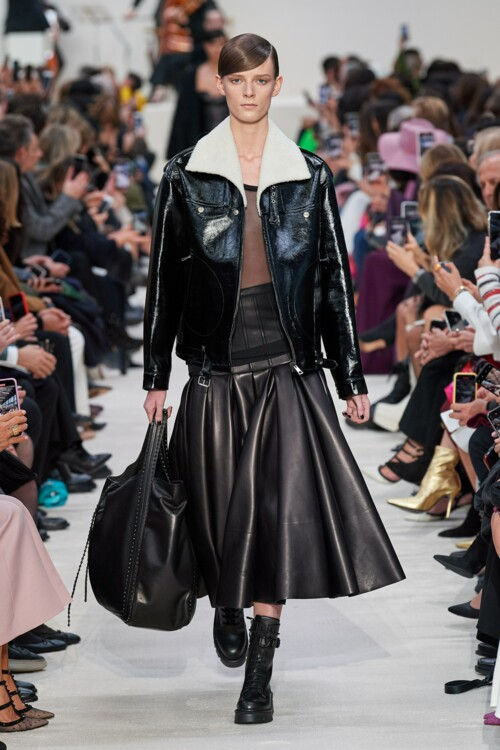

5 главных трендов сезона
зима-осень 2021-2022
7 сентября 2021
Прошедший модный сезон продиктовал новые правила - все, что было в прошлом десятилетии, останется в прошлом десятилетии. На смену худи и ugly boots приходят архитектурный крой, сверкающие платья и латексные костюмы. Vogue.ua собрал гид по 5 главным трендам грядущего сезона, которые можно носить уже сейчас.
Кожа
Эстетика «Матрицы» возвращается. Большой тренд минувших Недель моды - кожаные изделия во всевозможных проявлениях: пальто, плащи, куртки, брюки, юбки, обуви и аксессуары.
Alexander McQueen